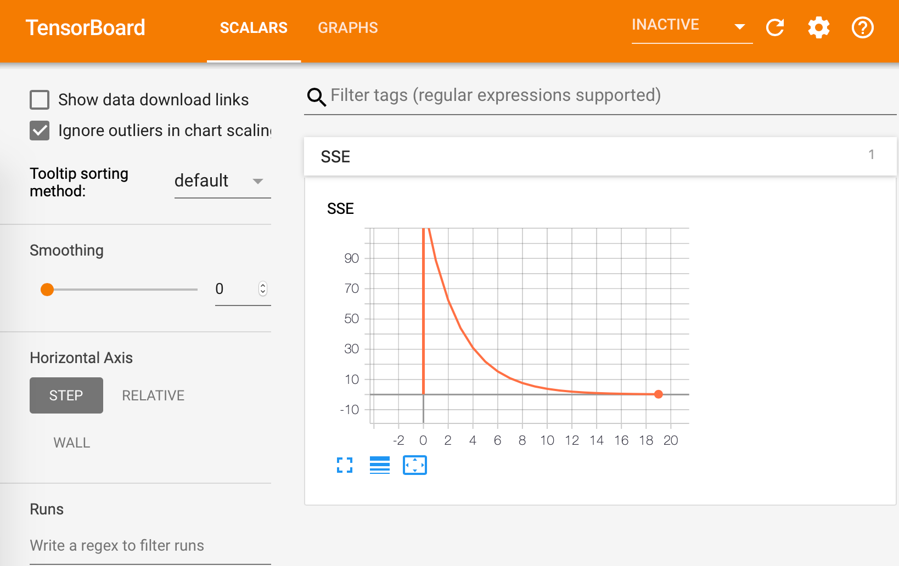

Estimación de parámetros óptimos en modelos de regresión usando R¶
Tal como se indicó en el documento anterior, las técnicas de optimización basadas en el gradiente son comúnmente usadas en la optimización de muchos tipos de modelos de redes neuronales. En este documento se aborda el proceso de obtención de parámetros para un modelo de regresión lineal usando gradientes. De esta forma, es posible ilustrar el proceso de obtención de parámetros óptimos de un modelo mediante la minimización de una función de pérdida, que corresponde al mismo procedimiento comúnmente utilizado en redes neuronales artificiales.
Al finalizar este documento, el lector estará en capacidad de:
Describir el modelo matemático y la operación de la optimización del gradiente aplicado a un modelo de regresión.
Implementar la optimización del gradiente aplicado a regresión en R.
Reconocer la diferencia entre el aprendizaje Batch y el aprendizaje Online.
Definición del problema¶
Se tienen los resultados de un conjunto de datos que relacionan las variables \(x\) y \(d\), a partir de los cuales se desea derivar un modelo para pronosticar \(d\) en función de nuevos valores de \(x\). Específicamente, se desean encontra los parámetros \(w_0\) y \(w_1\) del siguiente modelo de regresión entre las variables \(x\) y \(y\):
a partir de la siguiente tabla de observaciones, donde \(d\) es el valor real o deseado, \(x\) es la variable independiente, \(y\) es su aproximación usando el modelo de regresión descrito, y \(e\) es el error.
x d
----------------
0.1087 0.9519
0.2698 1.1237
0.3765 1.2360
0.2146 1.0526
0.9155 2.0743
0.0246 0.7906
0.0221 0.7603
0.8632 2.0533
0.6460 1.6887
0.2092 1.0563
0.8567 2.0991
0.1591 0.8953
0.9647 2.1917
0.6231 1.6266
0.7460 1.8508
0.3654 1.2828
0.3065 1.2283
0.6886 1.8722
0.4966 1.4657
0.2008 1.0418
0.2618 1.1097
0.7607 1.7826
0.1563 0.9711
0.4424 1.4267
0.7731 1.8248
[1]:
##
## A continuación se cargan los valores a R para su
## uso posterior
##
x <- c(0.1087, 0.2698, 0.3765, 0.2146, 0.9155,
0.0246, 0.0221, 0.8632, 0.6460, 0.2092,
0.8567, 0.1591, 0.9647, 0.6231, 0.7460,
0.3654, 0.3065, 0.6886, 0.4966, 0.2008,
0.2618, 0.7607, 0.1563, 0.4424, 0.7731)
d <- c(0.9519, 1.1237, 1.2360, 1.0526, 2.0743,
0.7906, 0.7603, 2.0533, 1.6887, 1.0563,
2.0991, 0.8953, 2.1917, 1.6266, 1.8508,
1.2828, 1.2283, 1.8722, 1.4657, 1.0418,
1.1097, 1.7826, 0.9711, 1.4267, 1.8248)
Solución¶
Definición del problema matemático¶
En un modelo de regresión se desean encontrar los parámetros \(w_0\) y \(w_1\) de la recta
que minimicen la suma de los errores cuadráticos entre el valor real \(d_i\) y el valor pronósticado \(y_i\) para cada valor posible de la variable \(x_i\), tal como se ilustra en la gráfica de abajo. El error \(e_i\) se define como \(d_i - y_i\).

Esto es, se desea encontrar la combinación de parámetros \(w_0\) y \(w_1\) que minimice:
Note que en la ecuación anterior, los valores de \(x_i\) y \(d_i\) son constantes que corresponden a la tabla de datos presentada en la formulación del problema, mientras que las variables son \(w_0\) y \(w_1\), de tal forma que:
Implementación de la función de pérdida¶
La ecuación anterior (SSE) retorna la suma del error cuadrático para diferentes valores de \(w_0\) y \(w_1\), calculada sobre el conjunto de datos existentes. Su implementación computacional es la siguiente:
[2]:
##
## Sumatoria del error cuadrático
##
SSE <- function(w0, w1) {
return(sum((d - (w0 + w1 * x))^2))
}
Forma de la superficie de la función de pérdida (SSE)¶
Ya que la función SSE depende únicamente de los valores de \(w_0\) y \(w_1\), es posible graficar su forma.
[3]:
f.3D <-
function(t = 45, p = 30, c = "gray85", s = 0.25)
{
K <- 30
w0 <- seq(-0.5, 3.0, 3.5 / K)
w1 <- seq(-0.5, 3.0, 3.5 / K)
z <- outer(w0, w1, Vectorize(SSE))
palette(gray(0:20 / 20))
options(repr.plot.width=4, repr.plot.height=4)
par(mar=c(1,1,1,1))
persp(w0, w1, z, theta = t, phi = p, col = c, shade = s)
}
f.3D()

[4]:
##
## Contorno
##
plot_contour <-
function()
{
K <- 30
w0 <- seq(-0.5, 3.0, 3.5 / K)
w1 <- seq(-0.5, 3.0, 3.5 / K)
z <- outer(w0, w1, Vectorize(SSE))
options(repr.plot.width=4, repr.plot.height=4)
par(mar=c(1,1,1,1))
par(pty="s")
contour(w0, w1, z, levels = c(0, 1, 2, 3, 5, 10, 20, 40, 60, 90))
}
plot_contour()

En términos de optimización, se desea encontrar las coordenadas \((w_0, w_1)\) del punto más bajo (error mínimo) de la superficie de error.
Minimización numérica¶
Para realizar la optimización numérica de la función \(\text{SSE}(w_0, w_1)\) se utiliza el método del gradiente descendente. Para iniciar, los parámetros \(w_0\) y \(w_1\) se agrupan en el vector de parámetros \(\mathbf{w}=[w_0, w_1]'\), tal que:
Ahora, como el método es iterativo, se parte de un vector de valores aleatorios, el cual es mejorado en cada iteración, de tal forma que con los valores de \(\mathbf{w}\) en la iteración \(k\), \(\mathbf{w}_k\) se obtienen a partir de los valores en la iteración \(k-1\) como:
donde \(\mu\) se define como el tamaño de paso o coeficiente de aprendizaje. Note que
Derivación del gradiente algebraico¶
El gradiente de la función de error se calcula como:
Si se tiene en cuenta que \(e_{i,k-1} = d_i - w_{0,k-1} - w_{1,k-1} x_i\), entonces:
Implementación del cómputo del gradiente¶
De esta forma, la función que computa el gradiente se implementa como:
[5]:
gSSE <- function(w0, w1) {
## calculo del error
e <- d - (w0 + w1 * x)
## gradientes
gw0 <- -2 * sum(e)
gw1 <- -2 * sum(e * x)
return(c(gw0, gw1))
}
gSSE(0, 1) ## se verifica que la implementación sea correcta
- -48.0098
- -24.14473716
Proceso iterativo de mejora de los pesos¶
A partir de las definiciones y cómputos anteriores, es posible implementar el proceso iterativo de mejora de los pesos usando la ecuación:
[6]:
mejora <- function(w0, w1, mu) {
## evalua la función de error en el punto actual
r <- gSSE(w0, w1)
## extrae las componentes del gradiente
gW0 <- r[1]
gW1 <- r[2]
## computa las mejoras de cada w
w0 <- w0 - mu * gW0
w1 <- w1 - mu * gW1
## retorna el nuevo w mejorado
return(c(w0, w1))
}
Optimización numérica usando el gradiente¶
Para realizar la optimización numérica, se parte de unos pesos iniciales aleatorios. Para efectos ilustrativos se supondra que \(w_0 = 0.5\) y \(w_1 = 3.0\)
[7]:
## Punto de inicio
w0 <- 0.5
w1 <- 3.0
## Valores en cada iteración
history_w0 <- c(w0)
history_w1 <- c(w1)
history_f <- c(SSE(w0, w1))
## Se realizan 20 iteraciones
for( epoch in 1:20) {
## Este es propiamente el proceso de
## optimización. La tasa de aprendizaje
## es 0.03
w <- mejora(w0, w1, 0.03)
w0 <- w[1]
w1 <- w[2]
## Se alamcenan los valores calculados
## en cada iteración
history_w0 <- c(history_w0, w0)
history_w1 <- c(history_w1, w1)
history_f <- c(history_f, SSE(w0, w1))
}
## Se imprime y se grafican los valores encontrados
cat('\nValores encontrados\n\n w0 = ', w0, '\n w1 = ', w1)
plot_contour()
lines(history_w0, history_w1, type='l', col = 'red');
Valores encontrados
w0 = 0.6755312
w1 = 1.643269

[8]:
plot(history_f, type = 'l'); grid()
[9]:
##
## A continuación se grafican la recta
## de mínimos cuadrados encontrada.
##
## Se generan los puntos
z <- seq(from = 0, to = 1, length.out = 50)
y <- w0 + w1 * z
## se grafican los datos originales
plot(x, d, type='p', pch = 21, bg = 'red');
## se grafica la recta encontrada
lines(z, y, lwd = 2);

Implementación usando TensorFlow¶
[10]:
##
## Borra el directorio de trabajo en cada corrida
##
system("rm -rf /tmp/example")
##
## Preparación
##
library(tensorflow)
## Crea una gráfica
graph <- tf$Graph()
with(graph$as_default(), {
##
## datos
##
x_ <- tf$constant(x)
d_ <- tf$constant(d)
## parámetros
w0 <- tf$Variable(2.5)
w1 <- tf$Variable(2.5)
## Define el modelo
m <- tf$add(tf$multiply(x_, w1), w0)
## Define la función de error
sse <- tf$reduce_sum(tf$square(d_ - m)) # sum of the squared errors
## Hace un resumen del SSE
tf$summary$scalar('SSE', sse)
resumen <- tf$summary$merge_all()
## Inicializa el optimizador
optimizer <- tf$train$GradientDescentOptimizer(learning_rate=0.03)
## Minimiza la función de error
opt <- optimizer$minimize(sse)
## Ejecución. Crea una sesión para realizar los cómputos
sess <- tf$Session(graph=graph)
## Crea el directorio donde se almacenarán los resultados
writer <- tf$summary$FileWriter('/tmp/example', graph)
## estima el modelo
with(tf$Session() %as% sess, {
sess$run(tf$global_variables_initializer())
for(i in 1:20){
summary <- sess$run(c(opt, resumen))
writer$add_summary(summary[[2]], global_step=i)
}
cat('\nValores encontrados\n\n w0 =', sess$run(w0), '\n w1 = ',sess$run(w1))
})
writer$flush()
writer$close()
})
Valores encontrados
w0 = 0.7803193
w1 = 1.535985
La gráfica de flujo de datos generada es la siguiente:

La evolución del SSE por iteración es:

Aprendizaje Batch vs Aprendizaje Online¶
En aprendizaje de máquinas, el término Batch se refiere a que los parámetros del modelo son actualizados con base a una corrección neta computada sobre todo el conjunto de datos de entrenamiento; este es el caso presentado en este documento, para el cual
Sin embargo, el algoritmo del gradiente también puede ser usado con el error instantáneo para el conjunto de entrada \(i\), o \(e_{i,k}(w_{0,i,k}, w_{1,i,k}) = d_i - w_{0,i,k-1} - w_{1,i,k-1}\) que es una función dependiente del vector \(\mathbf{w}\). De esta forma, la correción de los parámetros se realizar por cada patrón o ejemplo \(i\):
La ecuación anterior simplemente significa que se computa la corrección para un patrón o ejemplo \(i\) para los parámetros actuales; luego, se actualizan los parámetros, y se procede a presentar otro patrón a la red.
[11]:
##
## Datos
##
x <- c(0.1087, 0.2698, 0.3765, 0.2146, 0.9155,
0.0246, 0.0221, 0.8632, 0.6460, 0.2092,
0.8567, 0.1591, 0.9647, 0.6231, 0.7460,
0.3654, 0.3065, 0.6886, 0.4966, 0.2008,
0.2618, 0.7607, 0.1563, 0.4424, 0.7731)
d <- c(0.9519, 1.1237, 1.2360, 1.0526, 2.0743,
0.7906, 0.7603, 2.0533, 1.6887, 1.0563,
2.0991, 0.8953, 2.1917, 1.6266, 1.8508,
1.2828, 1.2283, 1.8722, 1.4657, 1.0418,
1.1097, 1.7826, 0.9711, 1.4267, 1.8248)
##
## Calcula el gradiente para el punto actual (u, v)
##
gOnline <- function(u, v, w0, w1){
## calcula el vector de errores
e = v - w0 - w1 * u
## gradientes
gw0 = -2 * e
gw1 = -2 * e * u
return(c(gw0, gw1))
}
mejora <- function(u, v, w0, w1, mu){
## computa el gradiente para los parámetros actuales
gw <- gOnline(u, v, w0, w1)
gw0 <- gw[1]
gw1 <- gw[2]
## realiza la corrección de los parámetros
w0 <- w0 - mu * gw0
w1 <- w1 - mu * gw1
## retorna los parámetros corregidos
return(c(w0, w1))
}
##
## Punto de inicio
##
w0 <- 0.5
w1 <- 3.0
history_w0 <- c(w0)
history_w1 <- c(w1)
history_f <- c()
## Se realizan 20 iteraciones sobre el
## todo el conjunto de datos disponibles
for(epoch in 1:20) {
## Se recorren secuencialmente todos
## los patrones xi, yi
for(p in 1:length(d)) {
w <- mejora(x[p], d[p], w0, w1, 0.03)
w0 <- w[1]
w1 <- w[2]
## se almacena la historia de puntos recorridos
history_w0 <- c(history_w0, w0)
history_w1 <- c(history_w1, w1)
history_f <- c(history_f, (d[p] - w0 - w1 * x[p])^2)
}
}
cat('\nValores encontrados\n\n w0 = ', w0, '\n w1 = ', w1)
plot_contour()
lines(history_w0, history_w1, type='l', col = 'red');
Valores encontrados
w0 = 0.6542495
w1 = 1.6428

[12]:
plot(history_f, type = 'l', col='red'); grid()

Gradiente Descendente Estocástico¶
El método del gradiente descendente estocástico es el método de aprendizaje online en el que los patrones son seleccionados aleatoriamente.
[13]:
##
## Punto de inicio
##
w0 = 0.5
w1 = 3.0
history_w0 <- c(w0)
history_w1 <- c(w1)
history_f <- c()
## se recorre 20 veces el conjunto de datos
for(epoch in 1:20) {
## se recorre el conjunto de datos
## en un orden aleatorio
for(p in sample(1:length(d))) {
w <- mejora(x[p], d[p], w0, w1, 0.03)
w0 <- w[1]
w1 <- w[2]
## se almacena la historia
history_w0 <- c(history_w0, w0)
history_w1 <- c(history_w1, w1)
history_f <- c(history_f, (d[p] - w0 - w1 * x[p])^2)
}
}
cat('\nValores encontrados\n\n w0 = ', w0, '\n w1 = ', w1)
plot_contour()
lines(history_w0, history_w1, type='l', col = 'red');
Valores encontrados
w0 = 0.6638676
w1 = 1.648665

[14]:
plot(history_f, type = 'l', col='red'); grid()
Ya que la función de pérdida suele tener puntos de mínima local, se prefiere utilizar el método del gradiente descendente estocástico para escapar de dichos puntos de mínima local y converger al punto de mínima global (punto de mejor ajuste del modelo).